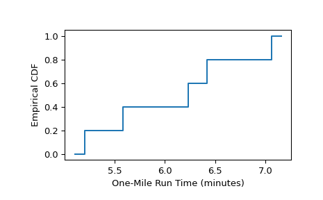

Empirical cumulative distribution function of a sample.
The empirical cumulative distribution function (ECDF) is a step function
estimate of the CDF of the distribution underlying a sample. This function
returns objects representing both the empirical distribution function and
its complement, the empirical survival function.
Besides array_like, instances of scipy.stats.CensoredData containing
uncensored and right-censored observations are supported. Currently,
other instances of scipy.stats.CensoredData will result in a
NotImplementedError.
An object representing the empirical survival function.
The cdf and sf attributes themselves have the following attributes.
quantilesndarray
The unique values in the sample that defines the empirical CDF/SF.
probabilitiesndarray
The point estimates of the probabilities corresponding with
quantiles.
And the following methods:
evaluate(x) :
Evaluate the CDF/SF at the argument.
plot(ax) :
Plot the CDF/SF on the provided axes.
confidence_interval(confidence_level=0.95) :
Compute the confidence interval around the CDF/SF at the values in
quantiles.
Notes
When each observation of the sample is a precise measurement, the ECDF
steps up by 1/len(sample) at each of the observations [1].
When observations are lower bounds, upper bounds, or both upper and lower
bounds, the data is said to be “censored”, and sample may be provided as
an instance of scipy.stats.CensoredData.
For right-censored data, the ECDF is given by the Kaplan-Meier estimator
[2]; other forms of censoring are not supported at this time.
Confidence intervals are computed according to the Greenwood formula or the
more recent “Exponential Greenwood” formula as described in [4].
Kaplan, Edward L., and Paul Meier. “Nonparametric estimation from
incomplete observations.” Journal of the American statistical
association 53.282 (1958): 457-481.
[3]
Goel, Manish Kumar, Pardeep Khanna, and Jugal Kishore.
“Understanding survival analysis: Kaplan-Meier estimate.”
International journal of Ayurveda research 1.4 (2010): 274.
As in the example from [1] page 79, five boys were selected at random from
those in a single high school. Their one-mile run times were recorded as
follows.
>>> sample=[6.23,5.58,7.06,6.42,5.20]# one-mile run times (minutes)
The empirical distribution function, which approximates the distribution
function of one-mile run times of the population from which the boys were
sampled, is calculated as follows.
>>> importmatplotlib.pyplotasplt>>> ax=plt.subplot()>>> res.cdf.plot(ax)>>> ax.set_xlabel('One-Mile Run Time (minutes)')>>> ax.set_ylabel('Empirical CDF')>>> plt.show()

Right-censored Data
As in the example from [1] page 91, the lives of ten car fanbelts were
tested. Five tests concluded because the fanbelt being tested broke, but
the remaining tests concluded for other reasons (e.g. the study ran out of
funding, but the fanbelt was still functional). The mileage driven
with the fanbelts were recorded as follows.
>>> broken=[77,47,81,56,80]# in thousands of miles driven>>> unbroken=[62,60,43,71,37]
Precise survival times of the fanbelts that were still functional at the
end of the tests are unknown, but they are known to exceed the values
recorded in unbroken. Therefore, these observations are said to be
“right-censored”, and the data is represented using
scipy.stats.CensoredData.